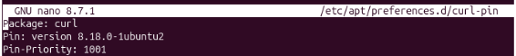
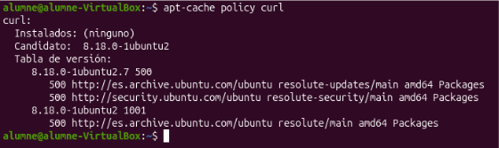

Portada / Índex de sprints / Sprint 1
Pining Packet
En executar la comanda apt-cache policy curl, comprovem quina versió del paquet curl està marcada com a candidata per instal·lar: Versió candidata inicial: 8.18.0-1ubuntu2.7 (prioritat 500) Versió anterior disponible: 8.18.0-1ubuntu2 (prioritat 500) Com que totes dues opcions tenen la mateixa prioritat per defecte (500), el gestor de paquets selecciona com a candidata la versió més recent (8.18.0-1ubuntu2.7)

Per tal de forçar el sistema a utilitzar una versió específica en lloc de la més recent, es crea o modifica un fitxer de preferències a /etc/apt/preferences.d/curl-pin utilitzant un editor de text com nano

En tornar a executar la comanda apt-cache policy curl, es comprova que la configuració s'ha aplicat correctament: Nova versió candidata: 8.18.0-1ubuntu2 Prioritat assignada: La versió 8.18.0-1ubuntu2 ha passat a tenir una prioritat de 1001.

Conclusió: Inicialment la versió prioritària (candidata) era la 8.18.0-1ubuntu2.7, però mitjançant les regles de pinning d'APT hem definit que la versió 8.18.0-1ubuntu2 passe a tenir la prioritat màxima (1001), convertint-se així en la nova versió candidata per a la instal·lació.